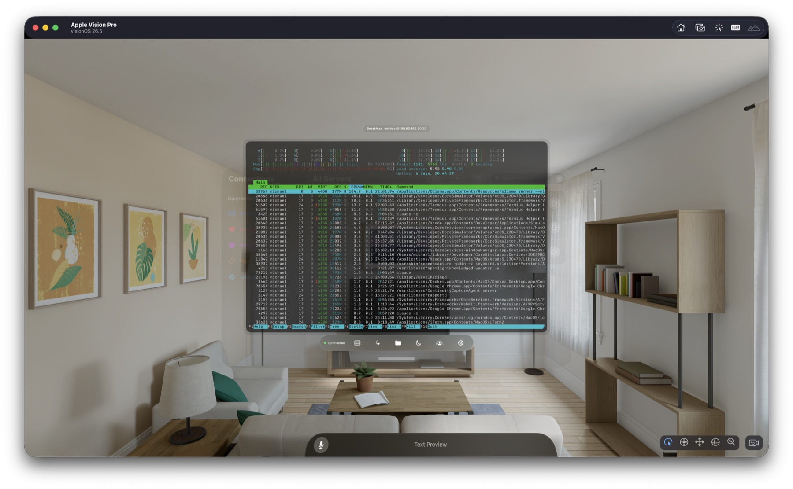
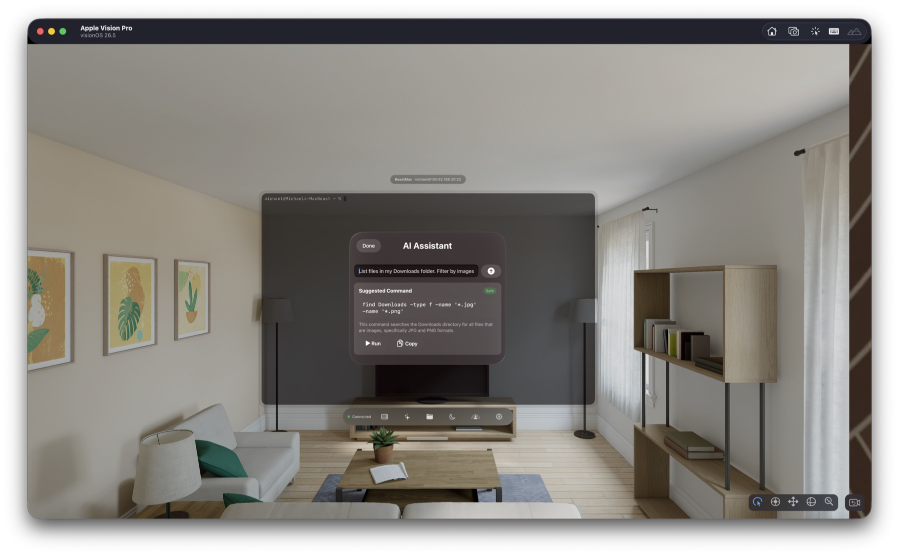
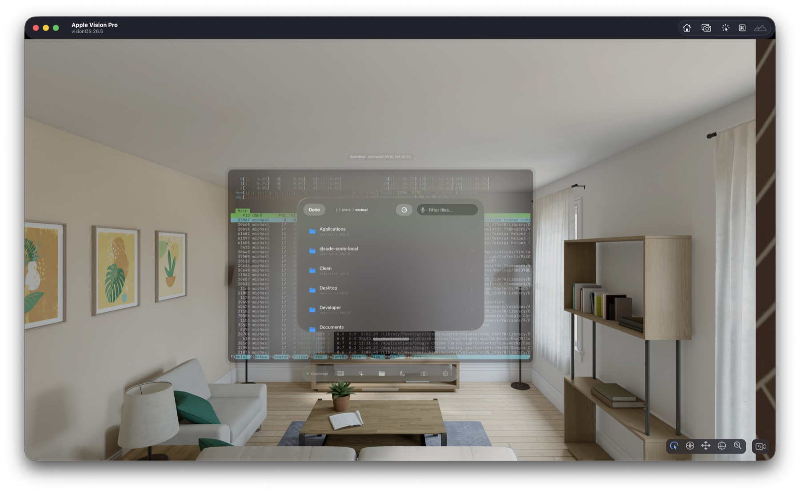
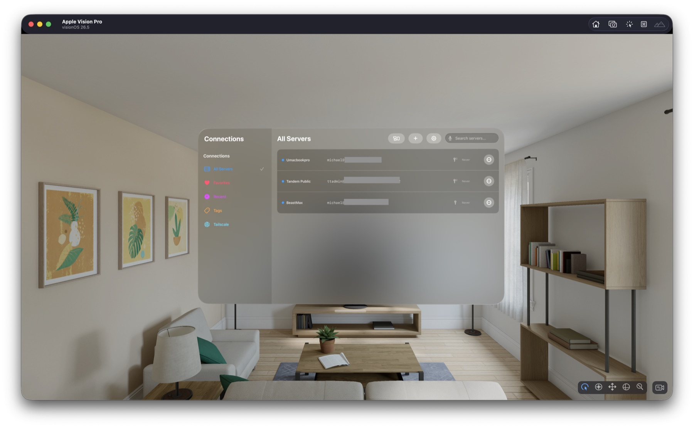

Native stack
Swift + SwiftUI + SwiftTerm + Citadel, purpose-built for visionOS 26.
visionOS native SSH · pre-alpha
A native visionOS terminal built from scratch for spatial computing. Float terminal windows in your space, run AI privately on-device, and connect to your entire Tailscale network with one tap.

htop session floating in your space — full PTY, truecolor, glass ornament controls.Swift + SwiftUI + SwiftTerm + Citadel, purpose-built for visionOS 26.
On-device AI via Apple Foundation Models. No cloud, no subscriptions.
Tailscale auto-discovery surfaces every device in one tap.
Feature set
Full PTY shells with ANSI/truecolor SwiftTerm rendering, dynamic resize, in-terminal search, and command snippets — not one-off command execution.
Apple Foundation Models power a command assistant, automatic error explainer, and session summaries. Everything runs on your Vision Pro — nothing leaves the device.
Add an API key or OAuth credentials once and glas.sh lists every device on your tailnet. Tap, authenticate, connect. Mobile devices are filtered out automatically.
Breadcrumb navigation, batch download and delete, streamed transfers with progress, file info
sheets, and recursive server-side find search.
Local (-L), Remote (-R), and Dynamic/SOCKS5 (-D) tunnels with full IPv4, domain, and IPv6 support.
Chain A → B → C with a reorderable hop list and cycle detection. Single-hop configs stay backward compatible.
P-256 keys generated inside the hardware chip with Optic ID gating, plus Ask/Strict/Insecure host-key verification and per-server fingerprint trust.
Immersive focus mode with Digital Crown depth, spatial server-health widgets, SharePlay session sharing, and per-window glass material and tint.
Records to asciicast v2 (asciinema-compatible) with timestamps, plus AI-generated session summaries and an auto-record option.
Screens


Workflow
Filter by favorites, recents, tags, search, or your live Tailscale tailnet.
Review the host key fingerprint and choose your trust behavior.
PTY shells with dynamic resize, on-device AI help, SFTP, and forwarding.

Security posture
Password auth, SSH key auth (RSA/Ed25519), and Secure Enclave-backed P-256 key generation gated by Optic ID.
Host-key verification modes (Ask / Strict / Insecure) with trust prompts and per-server trust storage.
Port forwarding (Local / Remote / Dynamic SOCKS5) and single- or multi-hop jump host chains.
Credentials stored in Keychain with a shared access group; on-device AI keeps prompts and output off the network.
SSH agent authentication path (UI present, not yet wired).
glas.sh is open source and actively iterating toward deeper SSH parity.